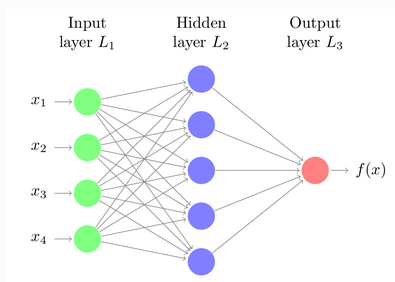

Nuestro producto
1Los mejores productos
Identificación de poses
- Una vez dando acceso a la cámara,usted tiene la posibilidad de hacer las sigues poses:
- Pose tipo T.
- Jarras.
- Agachado. Esta pagina web le mostrará qué tipo de pose que ha realizado.
1Identificación de sonidos.
Identificación de sonidos.
-
En este apartado tiene la posibilidad de reconocer los siguientes sonidos:
- Pollo.
- Silbido.
- Aplausos.
2Identificación de imágenes.
En este último apartado tiene la posibilidad de reconocer las siguientes imágenes :
- Celular.
- Lápiz.
- Pollo de juguete.
- Notas adhesivas .
- Carnet.
Teachable Machine
*¿Qué es teachable machine?
Teachable Machine es una herramienta de IA desarrollada por Google y basada en la web que hace que la creación de modelos de aprendizaje automático sea rápida, fácil y accesible para todos, su principal propósito es la creación de diferentes modelos de aprendizaje, con esta herramienta podrás preparar a un ordenador un modelo de reconocimiento de imágenes, sonidos y poses.
*¿Qué son las redes neuronales?
Las redes neuronales son modelos creados al ordenar operaciones matemáticas siguiendo una determinada estructura. La forma más común de representar la estructura de una red neuronal es mediante el uso de capas (layers), formadas a su vez por neuronas (unidades, units o neurons). Cada neurona, realiza una operación sencilla y está conectada a las neuronas de la capa anterior y de la capa siguiente mediante pesos, cuya función es regular la información que se propaga de una neurona a otra. Ejemplo de red neur simple
La primera capa de la red neuronal (color verde) se conoce como capa de entrada o input layer y recibe los datos en bruto, es decir, el valor de los predictores. La capa intermedia (color azul), conocida como capa oculta o hidden layer, recibe los valores de la capa de entrada, ponderados por los pesos (flechas grises). La última capa, llamada output layer, combina los valores que salen de la capa intermedia para generar la predicción.
*¿Qué es un perceptrón?
Un perceptrón es un modelo matemático inspirado en una estructura y función simplificadas de una única neurona biológica. Es una sección de Machine Learning que se utiliza para entender el concepto de clasificadores binarios. Forma parte del sistema de redes neuronales. De hecho, se puede decir que el perceptrón y las redes neuronales están interconectados. El perceptrón constituye el fundamento básico de la red neuronal que forma parte de Deep Learning. Se considera como bloques de construcción de una sola capa de la red neuronal.
*¿Partes de un perceptrón?
- Un conjunto de entrada xj(t)
- Unos pesos sinápticos wiiasociados a las entradas.
- Una regla de propagación hi(t)=(wii,xj(t)) La más común suele ser hi(t)=wiixj
- Una función de activación yi(t)=fi(hi(t)) que representa simultáneamente la salida de la neurona y su estado de activación.